Application-owned hidden Release captures. Hub topology, camp and stairs remain unchanged. Views use diagnostic poses; step, hub-exit and door phases advance the actual session clock. See verification and frame times. Interactive desktop review remains unverified.
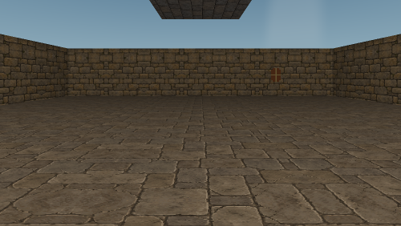
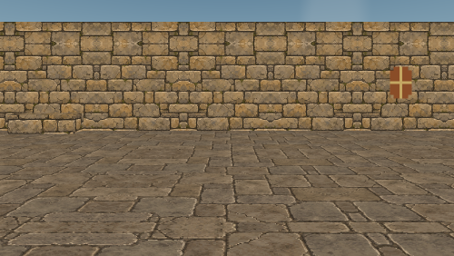
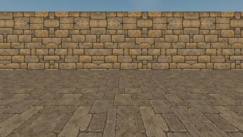
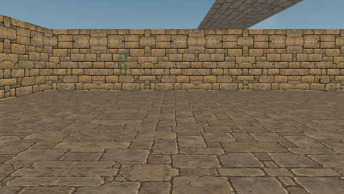
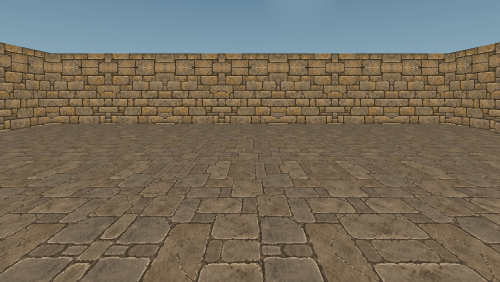
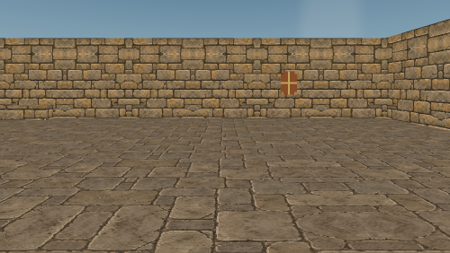
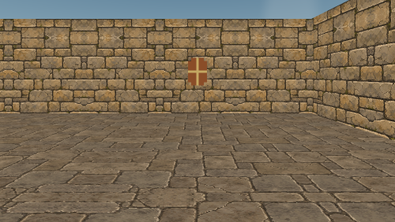
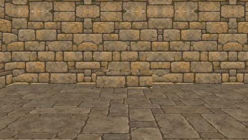
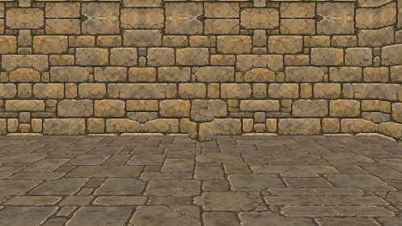
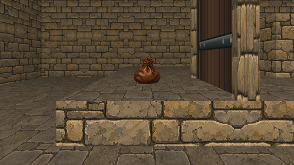
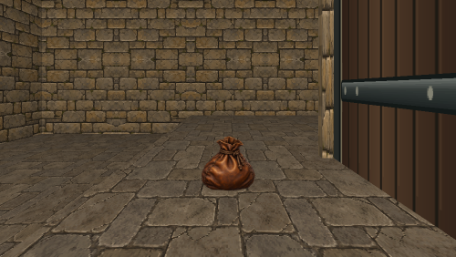
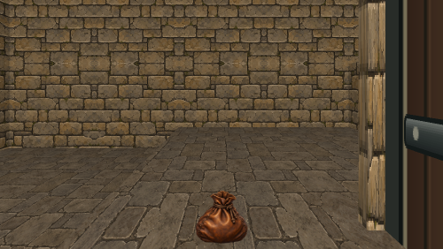
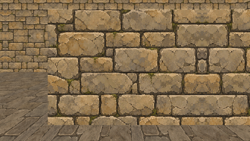
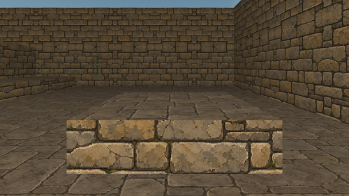
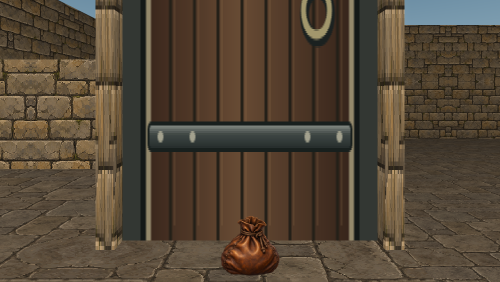
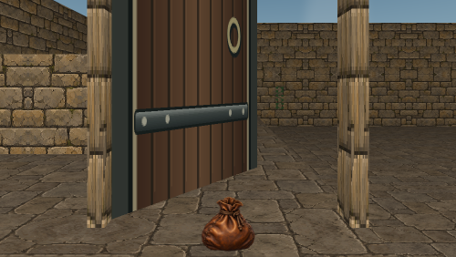
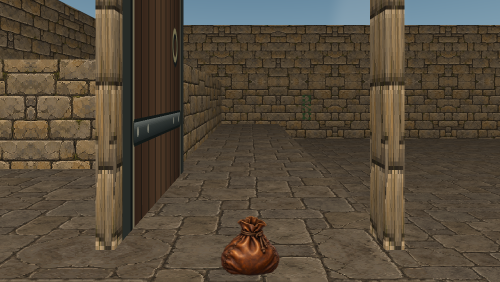
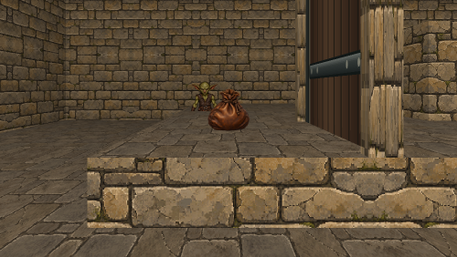
Step / courtyard exit, sampled about every 20 ms. A short hold separates loops.